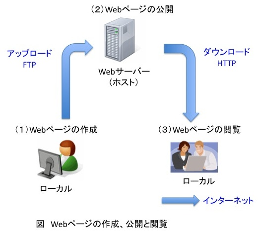

情報処理実習F: 第４回 Webサイト公開の手順
前回の復習
- 見出しを構成するタグは？
- 太字、斜体、文字の大きさを変えるタグは？
- リスト書きをするタグは？
Webサイト公開の手順
手元のパソコンをローカル、Webサーバーをホストと呼ぶ。ローカルで編集したWebページを、ホストにアップロードすることで、Webページが公開される。ローカルからホストへのファイル転送には通常FTPというプロトコルが用いられる。以下のような手順となる。
- ローカルでWebページを作成、更新する。
- ローカルのWebページをブラウザで確認する。
- ローカルのWebページをFTPでホストにアップロードする。
- ホストにアップロードされたWebページをブラウザで確認する。

FTPによるWebサーバーへの転送
- FTPソフト FFFTP を起動する。
- 授業用のWebサーバーにFTPで接続する。FFFTPの使い方は 初心者マニュアル を参照する。設定の詳細は授業で説明する。
- ローカルの初期フォルダをマイドキュメントの HomePage フォルダに設定する。
- ホストの初期フォルダを public_html に設定する。
- public_html フォルダ（ディレクトリ）を作成する。Webに公開するファイルは、この public_html の中に保存する。
- public_html フォルダ（ディレクトリ）の中に入る。
- ローカルからホストへ index.html ファイルを転送する。
- 名簿のリンクからWebページが閲覧できることを確認する。
- トップページには、public_html ディレクトリの下の index.html ファイルが表示される。
プロバイダやホームページスペースサービスを使う場合
- 授業用Webサーバー上のページは、東洋大学内からのみ閲覧可能である。また、授業用Webサーバーは、本年度2月一杯でデータが消去される。授業で学習した内容を元に、自らホームページを公開する場合には、以下に述べる方法でホームページスペースサービスを利用して公開してください。
- 自宅でインターネットサービスプロバイダからインターネットに接続している場合は、プロバイダがホームページスペースを提供している場合が多いので、それを利用可能である。
- また、数多くのホームページスペースサービスがある。無料のものも多い。
- そういったホームページスペースサービスでは、通常FTPを使ってサーバーにWebページを転送する。
- たとえばYahoo! ジオシティーズの場合は、FTPの設定について、FTP設定について (FFFTP)といったページに、FTP設定に関する説明が掲載されている。
- ホームページスペースサービスによって、使用可能なサーバー容量、CGI等の使える機能に差があるため、目的に応じて適したサービスを選択する。
FTPとセキュリティ
- FTPは、通信内容を暗号化しないプロトコルなので、クライアントとサーバーの間の通信経路でパスワードを盗聴される危険性がある。
- 可能であれば、SFTP, FTPS, SCP等の通信を暗号化するプロトコルを使うことが望ましい。
- 暗号化されたプロトコルを用いるためには、サーバーがそのプロトコルに対応している必要がある。プロバイダ選びの際に参考にすると良い。
- ウィルスに感染すると、FTPアカウント情報が盗まれて、ウェブサイトが改竄されることがある。ウィルスに感染しないように、注意する必要がある。
- 参考：「Gumblar」の攻撃が増加・長期化、サイト管理者は細心の注意を (Internet Watch, 2009/12/25)
Mac を使う場合
Mac を使ってWebページを作成する場合も、テキストエディタでHTMLファイルを作成し、FTPソフトでアップロードする。私の場合は、テキストエディタにCotEditor、FTPソフトにCyberduckを使っている。Cyberduckでは、サーバー上のファイルを直接エディタで開いて編集できるので便利である。
なお、Cyberduckは sftp, WebDAV にも対応している。
文字実体参照
HTML文書中に<h1>といった文字を書きたい時にはどうすればいいでしょうか？そのまま書いてしまうと、タグと認識されてしまいます。そこで、<h1>と書くと<h1>と表示されます。ここで、<は<を表示し、>は>を表示する文字実態参照です。
文字実体参照あるいは数値文字参照を使うと、< > & " £ € © ™ ½ á α β γ ≥ ♥ 〠 ☀ ♨ といった様々な記号を表示することができます。
課題
- 先週作ったファイルを、授業用ウェブサイトからアップロードしてください。
- 名簿のリンクからWebページが閲覧できることを確認してください。
- 十分に理解できていない場合には、よく復習して、最初からやり直してみてください。
- 分からなければ質問をしてください。
情報処理実習F